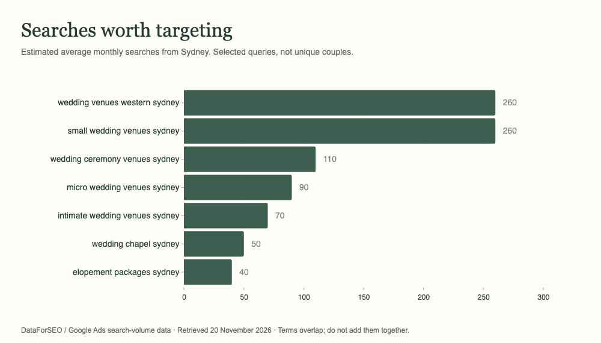
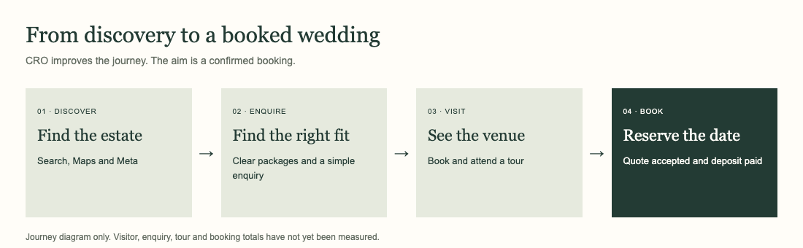
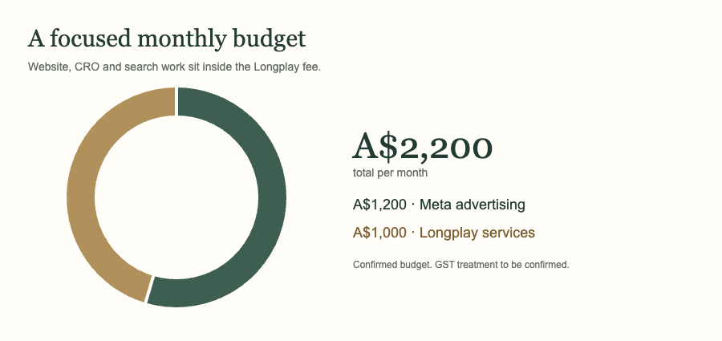

Our recommendation
Lead with the chapel.
Make the next step clear.
The private heritage chapel and gardens give couples a reason to choose Lords Estate. Clear packages, a better website journey and timely follow-up help turn that interest into a booking.
Focus the first 60 days on website improvements, CRO, SEO and Meta. Measure confirmed weddings and booking value, with enquiries and tours showing early progress.
Where Lords Estate stands today
There is already useful visibility. The priority is to protect it and help more interested couples become bookings.
| What we checked | What we found | What it means |
|---|---|---|
| Chapel discovery | Position 2 in the unpaid Google map pack for “wedding chapel sydney”, on desktop and mobile. | The chapel is already a recognised reason to find the estate. |
| Elopement discovery | Position 3 in ordinary results for “elopement package sydney”, Sydney desktop. | Keep and improve the existing package page. |
| Google reviews | Maps samples returned 5.0 from 151 reviews. | Use current, genuine customer proof. |
| Wedding overview | The /weddings/ page rendered without substantive wedding information. | Couples need a clear comparison of their options. |
| Package facts | Photography inclusions and some access times conflict between page copy and FAQs. | Correct the facts before sending more visitors. |
| Page summaries | 17 of 17 checked content pages lack a meta description. | Write useful search summaries for the important pages. |
Sources: public website crawl and DataForSEO samples, 20 November 2026. These are dated observations, not guaranteed positions. Map-pack and ordinary-result ranks measure different searches. The Google listing, wedding overview and elopement page provide the public context.
Some fresh organic samples conflicted with older ranking records, including brand searches. We have not treated those absences as a ranking loss. Actual traffic, enquiries and booking conversion rates need access to the venue's accounts. Speed remains unmeasured because the PageSpeed requests were rate-limited.
The opportunity to lead with
Private heritage chapel. Gardens. A wedding that feels like your own. This is the strongest positioning supported by the venue and search research. It promotes weddings across the estate, not chapel hire alone.
Start by explaining Classic, then guide couples to Memories or Timeless where those packages suit their wedding. This is a recommendation about offer clarity, not a claim that Classic is the most profitable package. Confirm package facts and available dates with the owners.
Elopement remains a useful separate offer. Its page describes a drawing-room or rose-garden ceremony, so its advertised price must not imply a chapel ceremony. We have not substantiated a count of how many Sydney estates have chapels.

Search estimates: DataForSEO Google Ads keyword data, Sydney, retrieved 20 November 2026. Monthly history from November 2025 to October 2026 where supplied. Similar terms overlap; do not add them as unique couples. The workbook contains all 66 researched phrases.
Where to compete first: chapel and elopement searches, followed by relevant ceremony, smaller-wedding and Western Sydney searches. Broad “wedding venues sydney” has a larger estimate of 4,400 searches, but is not the first 60-day ranking target.
Couples can also compare Old St Thomas Chapel, Chapel Hill Retreat, Cropley House and Oatlands Estate. The first two offer chapels; the latter two are broader estate and heritage-venue alternatives. Lords Estate should make its setting, package inclusions and guest fit easy to compare.
CRO: turn interest into wedding bookings
Conversion rate optimisation means improving the steps between discovering the venue and paying a booking deposit. We will measure where couples stop, then improve that step.

This shows the customer journey, not measured conversion rates. Those rates will be established from the venue's records.
| Improve this | What we will do | Measure the result |
|---|---|---|
| First impression | Lead with the chapel, gardens, location and wedding fit. Use real venue photography. | Relevant visits that become enquiries. |
| Package choice | Rebuild the wedding overview; clarify guest limits, inclusions, prices and available settings. | Qualified enquiries and package fit. |
| Enquiry and tour | Make the mobile action clear. Test the Event Temple and Calendly routes, delivery and confirmation. | Completed enquiries, tours booked and tours attended. |
| Follow-up | Agree who responds, how quickly, and how quotes and deposits are recorded. | Enquiries and tours that become confirmed weddings. |
Keep the existing URLs and improve the homepage, wedding overview, Classic and Elopement pages, plus shared enquiry components. Correct facts on the other packages too. This is a focused refresh on the current website.
The first 60 days
| When | Main work | What should be visible |
|---|---|---|
| Days 1 to 7 | Confirm package facts, available dates, access and the booking baseline. | Agreed offer and a simple enquiry-to-booking register. |
| Days 8 to 14 | Fix key page content, improve mobile actions and test enquiries. Prepare ads. | Clearer pages and a working, measured enquiry route. |
| Days 15 to 30 | Launch the approved Meta test. Improve search titles, internal links and business-profile facts. | First campaign enquiries assessed for quality, with weekly reporting. |
| Days 31 to 45 | Improve the ads and CRO using actual enquiries, tours and objections. | Evidence of which messages and packages attract suitable couples. |
| Days 46 to 60 | Review bookings, booked value, open quotes and search progress. | A clear decision on what to continue, change or stop. |
Meta: start with one lead campaign and four creative concepts using approved venue assets. Test the chapel, chapel-and-gardens experience, smaller ceremonies and a venue tour. Choose the package message using enquiry quality and booking contribution, not the cheapest lead alone.
SEO and AI search: protect useful pages, correct conflicting facts, improve the wedding overview and check relevant listings. Google AI Overviews already mention and sometimes cite Lords Estate in our samples. Clear, consistent facts help people and search systems understand the venue. No special AI file guarantees inclusion. Google's guidance
The sprint starts when access and approved facts are available. Hold media spend until the enquiry route and follow-up process are tested. Do not automatically catch up unspent media later.
The budget and scope

| Planning allowance | Each month | Two monthly cycles |
|---|---|---|
| Longplay: website refresh, CRO, SEO, AI-search foundations and Meta management | A$1,000 | A$2,000 |
| Meta advertising | A$1,200 | A$2,400 |
| Total | A$2,200 | A$4,400 |
Media is about A$40 a day using a 30-day month, within the approved monthly cap. GST treatment remains to be confirmed. These are budget allowances, not a required spend if launch is delayed.
The fee covers the focused page work above, one initial campaign, four creative concepts, weekly checks and one planned creative refresh. Existing platform, tools and approved assets are assumed. A complete custom rebuild, new photography, paid software, Google Ads or a large content programme needs separate scope.
What success looks like
Main outcome: more deposit-paid wedding bookings, with booking value and contribution tracked. Enquiries and tours tell us earlier whether the work is moving towards that outcome.
| Weekly scorecard | Why it matters |
|---|---|
| Qualified enquiries | Couples fit the estate's offer, guest capacity and available dates. |
| Tours booked and attended | Interest is becoming serious consideration. |
| Quotes and deposit-paid weddings | The commercial result, with each booking counted once. |
| Booked value and total marketing cost per booking | Whether growth is worth the fee and media cost. Compare with contribution, not revenue alone. |
| Non-brand search clicks and repeat query checks | Whether relevant discovery improves, using a consistent measurement method. |
Set numerical targets from the first-week baseline. Report the original enquiry source, deposit date and wedding date separately. A 60-day review may still include open quotes: the venue's enquiry-to-booking cycle is not yet known. We will work towards booking growth without promising an unsupported booking count or ranking.
To begin: website, Search Console, analytics, Business Profile, Meta and enquiry-system access; approved package details and image rights; available dates; recent enquiry and booking records; and a named person to follow up.
Prepared by Longplay Media for Lords Estate, 20 November 2026. This public-evidence audit does not include private account or booking data. Detailed keyword and page recommendations accompany this brief in the workbook.